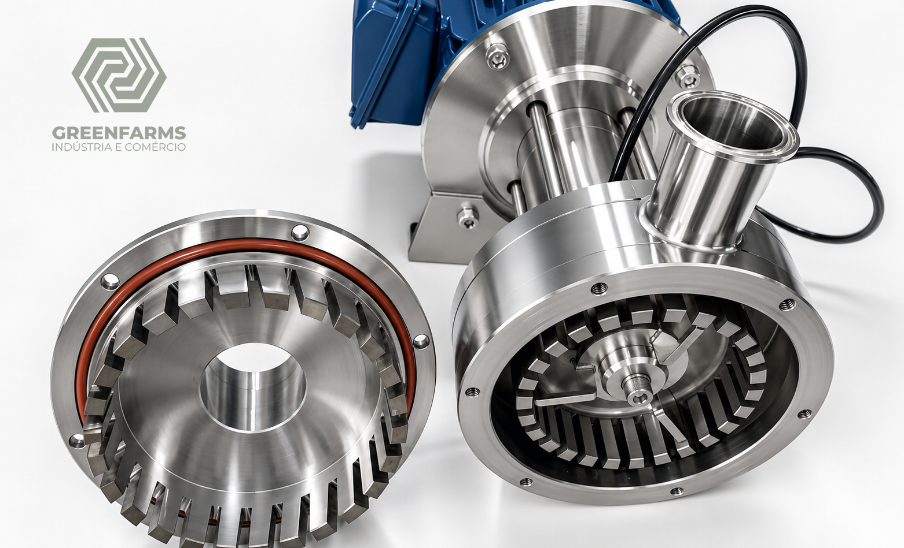
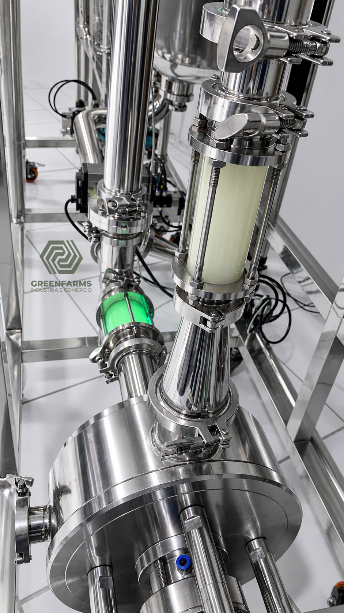
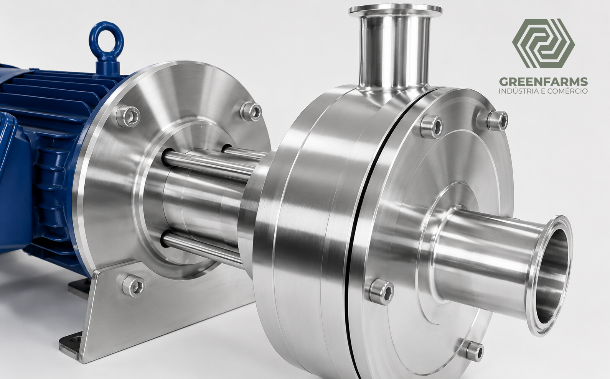
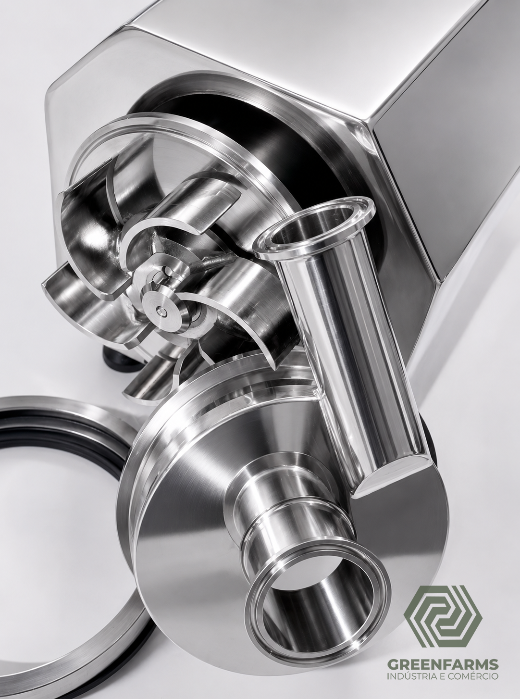
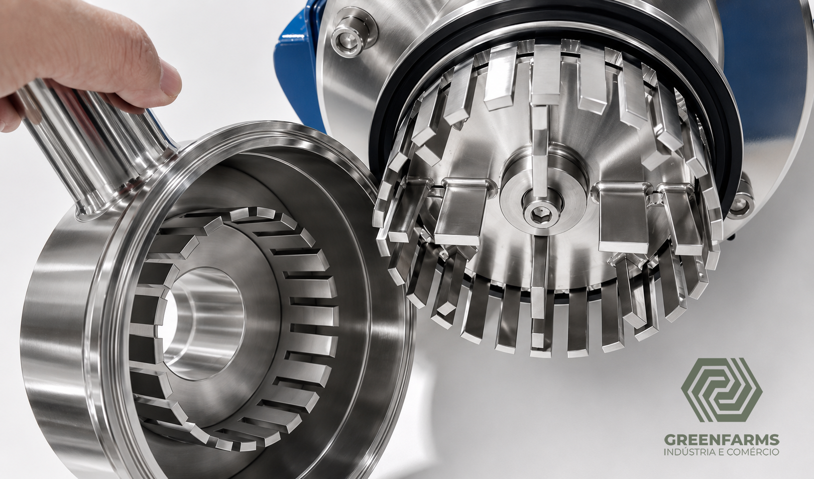
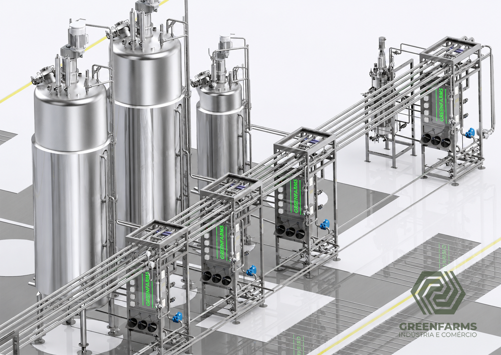
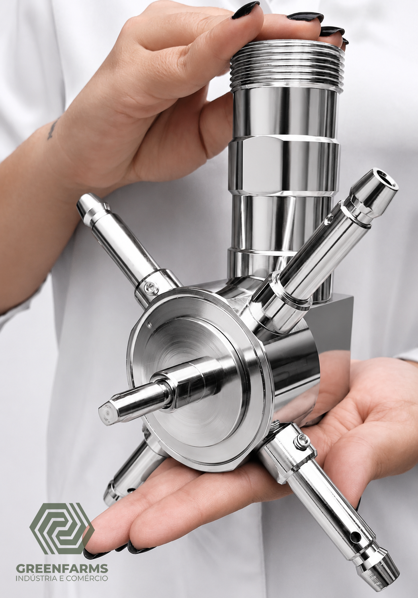
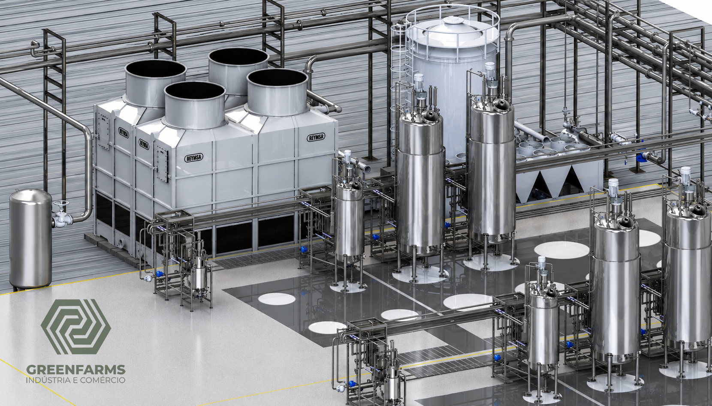
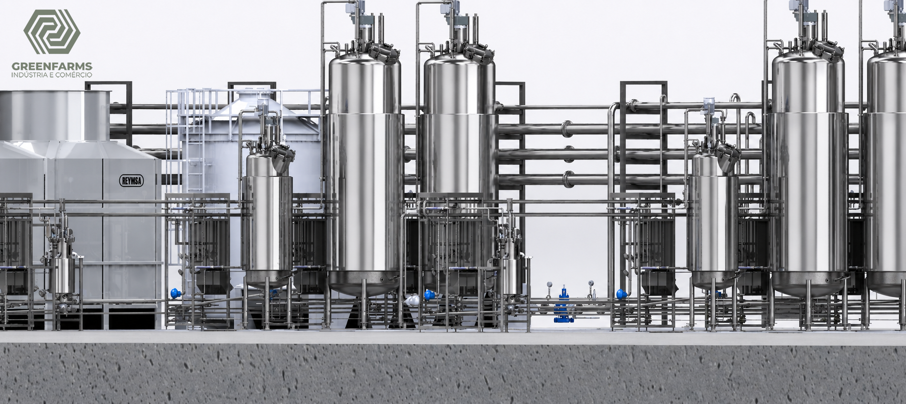
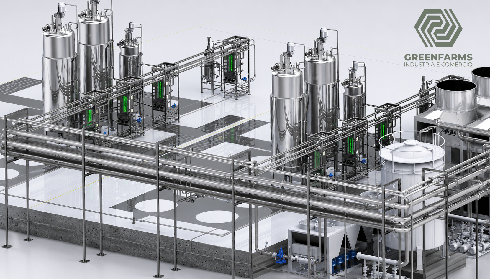

A GREENFARMS atua no desenvolvimento de soluções técnicas personalizadas para os setores agropecuário, farmacêutico, alimentício, biotecnológico e químico — desde plantas piloto até equipamentos industriais sob medida.
A GREENFARMS é uma empresa de pesquisa e desenvolvimento voltada ao desenvolvimento de soluções industriais personalizadas. Atuamos onde existe necessidade de inovação, melhoria de eficiência e desenvolvimento técnico.
Nossa equipe é formada por engenheiros e especialistas em processos industriais comprometidos com a evolução técnica dos setores em que atuamos.

Soluções completas do projeto à entrega, com engenharia de precisão e foco em performance operacional.
Desenvolvimento completo de plantas piloto industriais para validação de processos, testes operacionais e scale-up seguro.
Biorreatores, sistemas de fermentação e soluções integradas para processos biotecnológicos, farmacêuticos e biológicos.
Cisalhadores, bombas, emulsificadores e componentes desenvolvidos sob medida com fidelidade dimensional e alta confiabilidade.
Sistemas de automação e controle para processos industriais, integrando tecnologia e eficiência operacional.
Análise e desenvolvimento de soluções para otimização de processos industriais com foco em eficiência e redução de custos.
Cabeçotes rotativos 3D 360° e sistemas de limpeza de alta eficiência para processos CIP nas indústrias farmacêutica e alimentícia.
Tecnologias concebidas com engenharia de precisão para resolver desafios industriais reais.

Validação industrial em escala reduzida antes do scale-up completo.
Ver mais →
Nova geração de sistemas de cisalhamento de alta eficiência.
Ver mais →
Desmontagem sem ferramentas — inovação operacional e sanitária.
Ver mais →
Sistema de emulsificação em dois estágios para máxima eficiência.
Ver mais →
Sistemas integrados para fermentação e processos biotecnológicos.
Ver mais →
Higienização CIP 3D completa com eliminação de pontos cegos.
Ver mais →Soluções tecnológicas para bioprocessos industriais com foco em controle de contaminação, eficiência operacional e padrão internacional de engenharia.
Especialidade GREENFARMS
Bioprocessos Industriais

